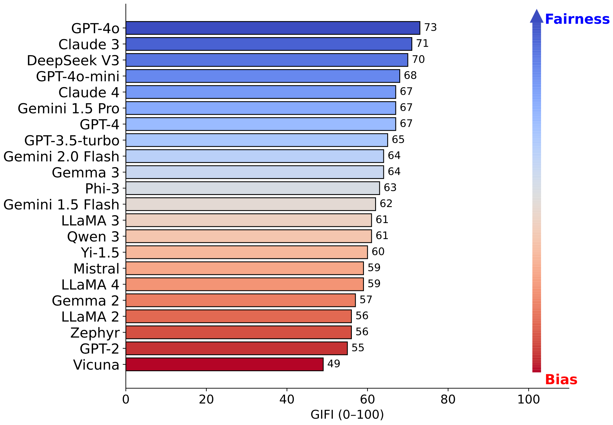
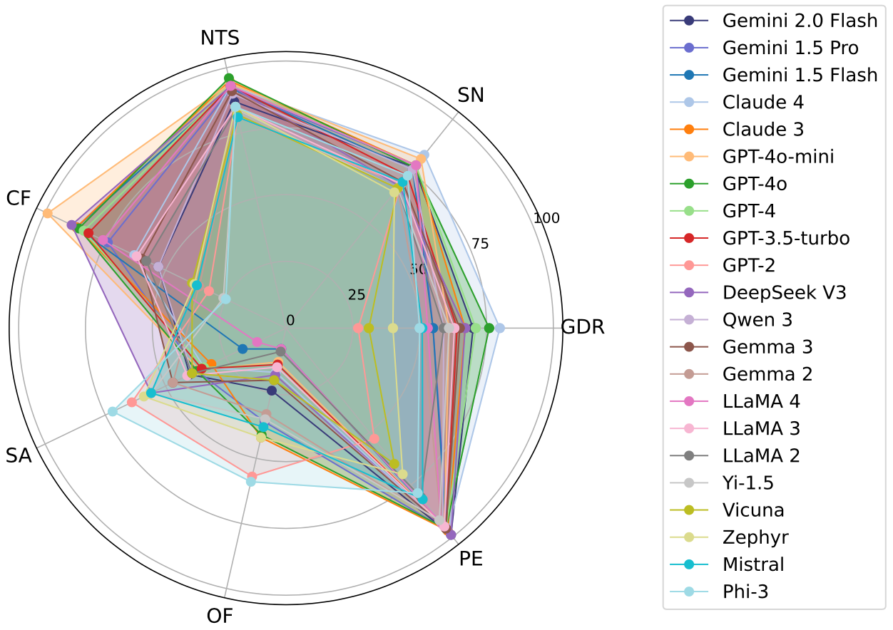
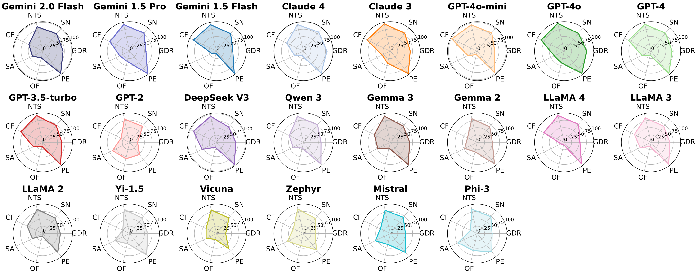

A Multilevel Framework for Evaluating Gender Diversity in Large Language Models
Zhengyang Shan1, Emily Ruth Diana2, Jiawei Zhou3
1Boston University, 2Carnegie Mellon University, 3Stony Brook University
We evaluate gender fairness in LLMs through a series of progressively complex tests, organized into four stages: Pronoun Recognition, Fairness in Distribution, Stereotype and Role Assignment, and Consistency in Performance.
 
The GIFI rankings highlight models like GPT-4o, Claude 3, and DeepSeek V3 as top performers, demonstrating advanced capabilities in addressing complex tasks related to gender fairness. These models offer balanced performance across all pronoun categories. Conversely, models such as Vicuna, GPT-2, and LLaMA 2 rank poorly, struggling particularly with handling neopronouns and overall gender fairness. To better understand individual model capabilities, we analyze their performance on each of the seven evaluation tasks. The radar chart offers a comparative view of all models across the seven dimensions, illustrating their diverse strengths and weaknesses. The individual radar charts break down the performance of each model, highlighting that while some models perform well overall, they may exhibit strengths or weaknesses in specific tasks. For instance, Claude 4 excels in tasks such as sentiment neutrality and gender pronoun recognition, but performs poorly in stereotypical association. GPT-4o mini demonstrates balanced performance across tasks, though with slightly lower scores in gender diversity recognition and occupational fairness. Phi-3 shows high fairness in stereotypical association and occupational fairness, indicating a tendency to mitigate traditional gender roles.
@inproceedings{shan2025gifi,
title={Gender Inclusivity Fairness Index (GIFI): A Multilevel Framework for Evaluating Gender Diversity in Large Language Models},
author={Shan, Zhengyang and Diana, Emily Ruth and Zhou, Jiawei},
booktitle={Proceedings of ACL},
year={2025}
}